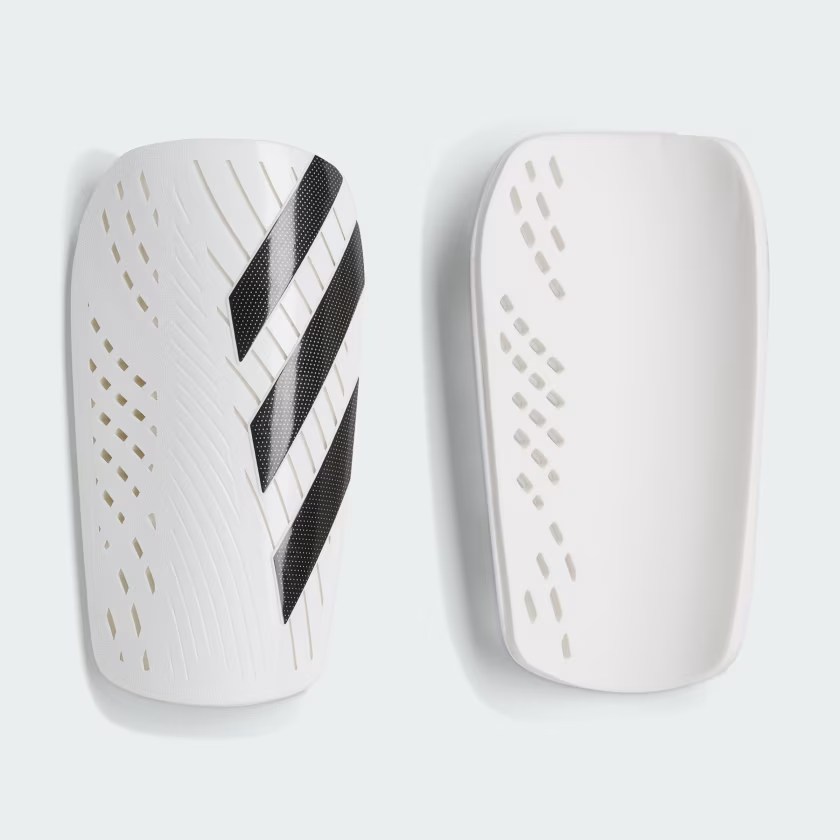
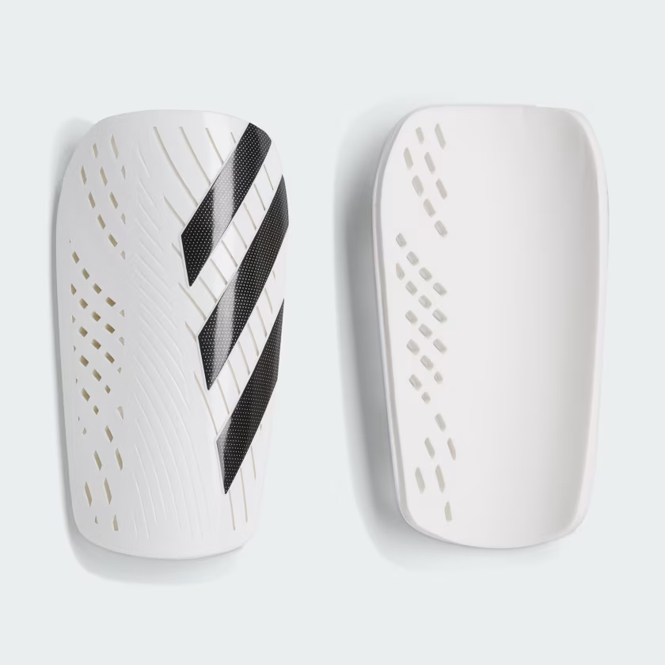
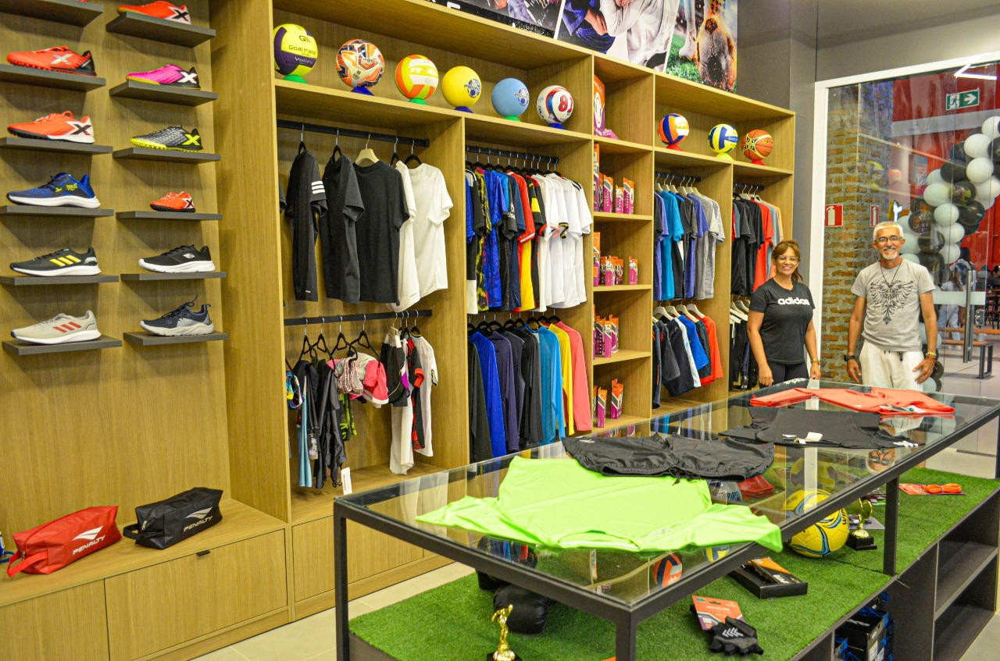

Produto em Destaque
 


Sobre a Loja
Bem-vindo à SpeedCenter, a loja de esportes que transforma suas paixões em conquistas! Aqui, oferecemos uma ampla seleção de produtos e equipamentos para atender a todas as suas necessidades esportivas. Seja você um atleta profissional, um entusiasta do fitness ou alguém que simplesmente gosta de se manter ativo, temos tudo o que você precisa para alcançar seus objetivos.
Nossa loja é o lugar ideal para encontrar roupas esportivas de alta qualidade, calçados especializados e equipamentos inovadores para uma variedade de esportes, incluindo corrida, futebol, tênis, natação, e muito mais. Trabalhamos com marcas renomadas e garantimos produtos que combinam desempenho, durabilidade e estilo.
Além de nossa vasta gama de produtos, o SpeedCenter também oferece um atendimento ao cliente excepcional. Nossa equipe de especialistas está sempre disponível para ajudar você a encontrar o item perfeito e oferecer conselhos especializados para otimizar seu desempenho e conforto.
No SpeedCenter, acreditamos que o esporte é uma forma de vida e um caminho para o bem-estar e a felicidade. Venha nos visitar e descubra como podemos ajudar você a alcançar novos patamares e a viver suas paixões ao máximo. No SpeedCenter, sua jornada esportiva começa aqui!
Nossa loja no Google Maps
Formas de Pagamento
- Cartão de Débito
- Cartão de Crédito (com aquela taxazinha tlg)
- Pix
- Boleto